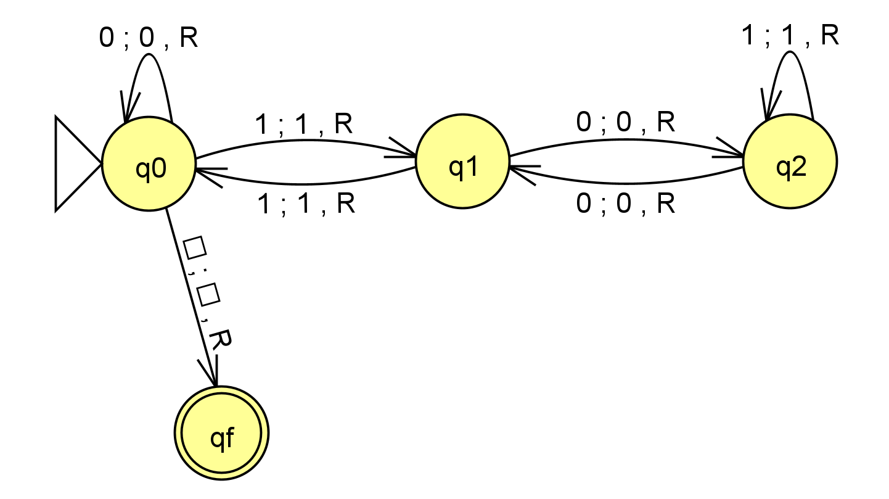
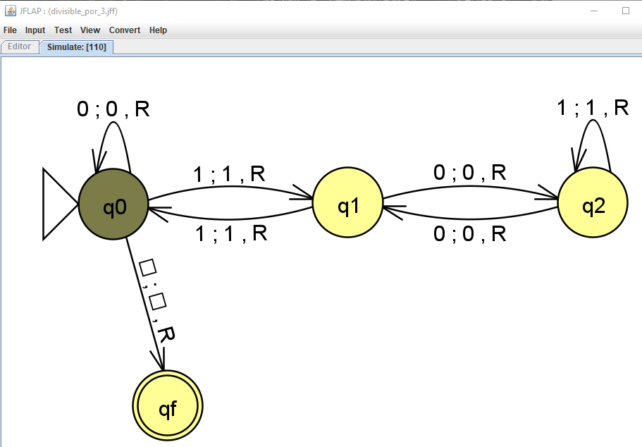
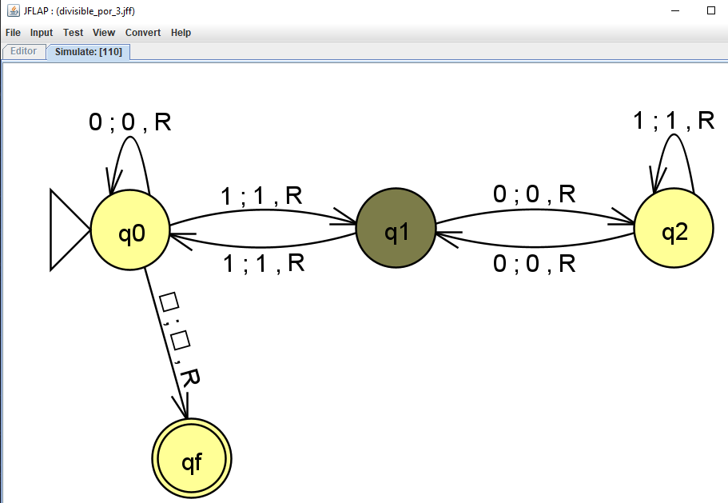
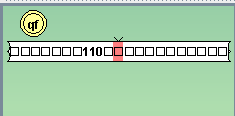

Ejemplo de aplicación de la Máquina de Turing.
Se diseña una Máquina de Turing que sea capaz de determinar si una cadena binaria (compuesta por ceros ‘0’ y ‘1’) es divisible por 3. La máquina aceptará la cadena si contiene números divisibles por 3, y la rechazará si el número no logra ser divisible por 3.

Ejemplo Máquina de Turing.
Estados:
- q0: El estado q0 es el estado inicial.
- q1 y q2: Los esados q1 y q2 son estados intermedios de balanceo.
- qf: El estado qf es el estado final o de aceptación.
Transiciones.
| Estado Actual | Símbolo Actual | Nuevo Símbolo | Movimiento | Nuevo Estado |
|---|---|---|---|---|
| q0 | 0 | 0 | Derecha | q0 |
| q0 | 1 | 1 | Derecha | q1 |
| q0 | B | B | Derecha | qf |
| q1 | 0 | 0 | Derecha | q2 |
| q1 | 1 | 1 | Derecha | q0 |
| q2 | 0 | 0 | Derecha | q1 |
| q2 | 1 | 1 | Derecha | q2 |
Descripción del funcionamiento.
- La máquina comienza en el estado q0.
- Si el cabezal lee un '1', la máquina cambia al estado q1 y se mueve a la derecha.
- Si lee un '0', la máquina permanece en el estado q0 y se mueve a la derecha.
- Si encuentra un espacio en blanco (B), la máquina cambia al estado qf, indicando que la cadena está vacía o ha finalizado.
- En el estado q1, si lee un '0', cambia al estado q2 y se mueve a la derecha.
- Si lee un '1', regresa al estado q0 y se mueve a la derecha.
- En el estado q2, si lee un '0', regresa al estado q1 y se mueve a la derecha.
- Si lee un '1', permanece en el estado q2 y se mueve a la derecha.
Ensayo con binario 110:
Veamos el funcionamiento con la cadena de binarios 110, en decimal 6.
- La máquina comienza en el estado q0.
- El cabezal lee un '1', haciendo que la máquina cambie al estado q1 y se mueve a la derecha.
- En el estado q1, el cabezal lee un '1', regresa al estado q0 y se mueve a la derecha.
- En el estado q0, el cabezal lee un espacio en blanco (B, presentado en el programa como un ‘□’), haciendo que la máquina cambie al estado final de aceptación qf y se mueve a la derecha.



